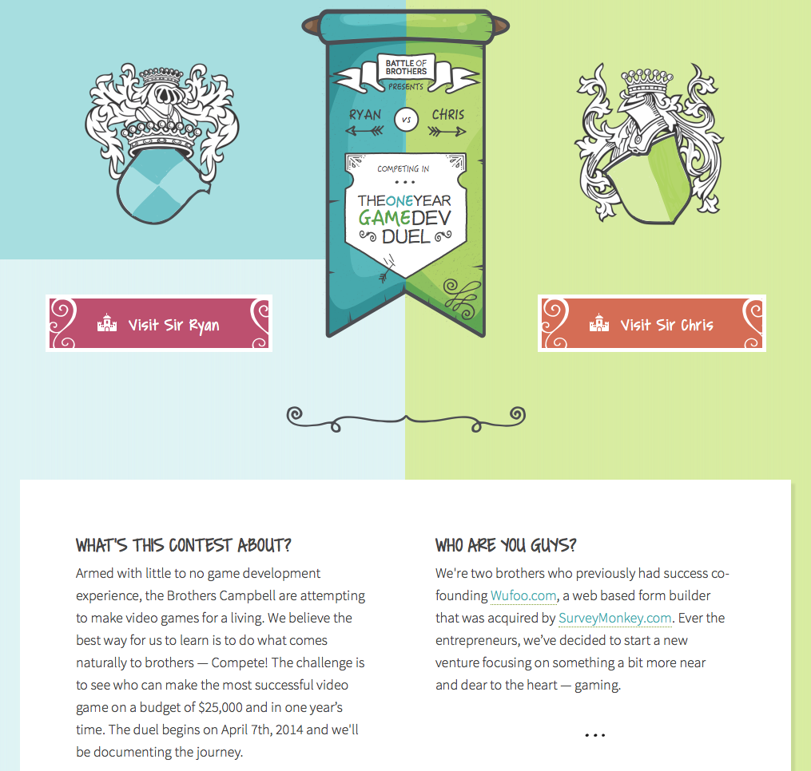

Battle of Brothers
Shortly after leaving SurveyMonkey, my brother and I decided to persue a passion: Game Development! How hard could it be, right? We naively created a one year competition to see who could make the better game.

With excitment and motivation, we jumped right in and got to work. We even rented an office space for 2 years! And of course, we commited ourselves to documenting the journey. Enter battleofbrothers.com.
There are too many lessons learned to cover them all here. Head on over to my list of status updates if you want the play by play.
Will I Finish?
I don’t know. Up until October 2017, I was working on the game non stop. A hurricane came through town, which caused me to take a two week break. During that break, I realized how much unnecessary stress I was placing on myself over the game. It was also taking away the joy of programming. I would like to finish, and I still hold myself accountable for keeping builds running on new iOS versions. But, no promises, yet.